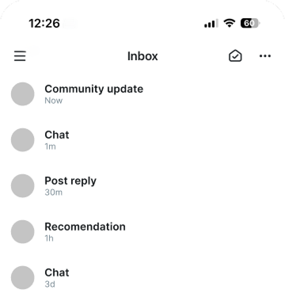
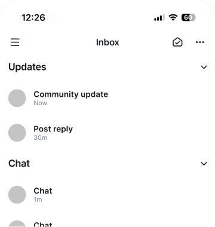
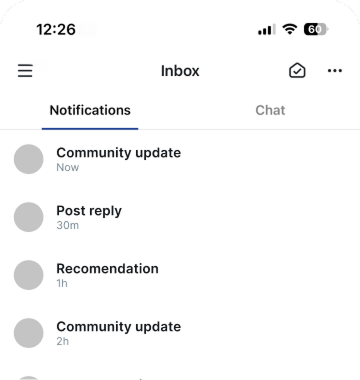

Chronological
Flat IA is quick to scan and act
Mixing activity confuses users

Nested
Inline groups organize activity
Priority items can get buried in lists
✓ Best Fit

Tabbed
Separating groups organizes activity
Tabs support quick scan & action